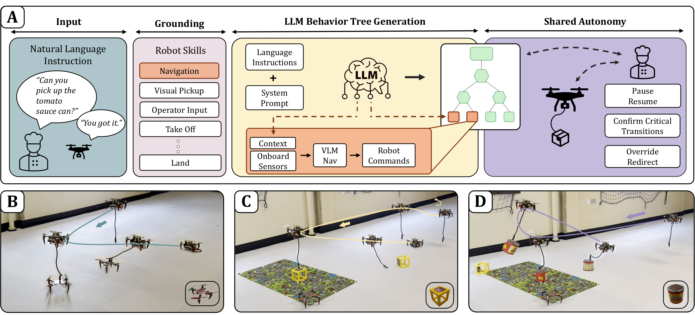
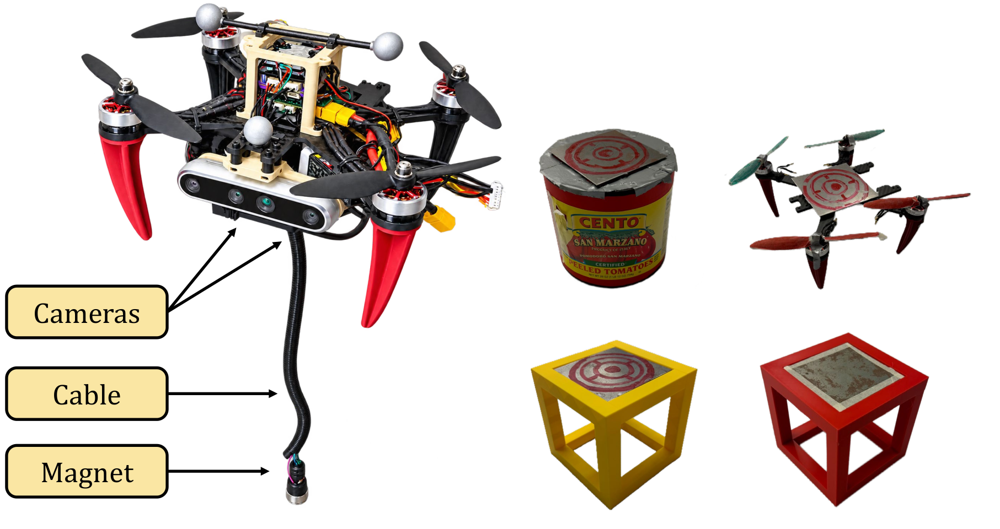
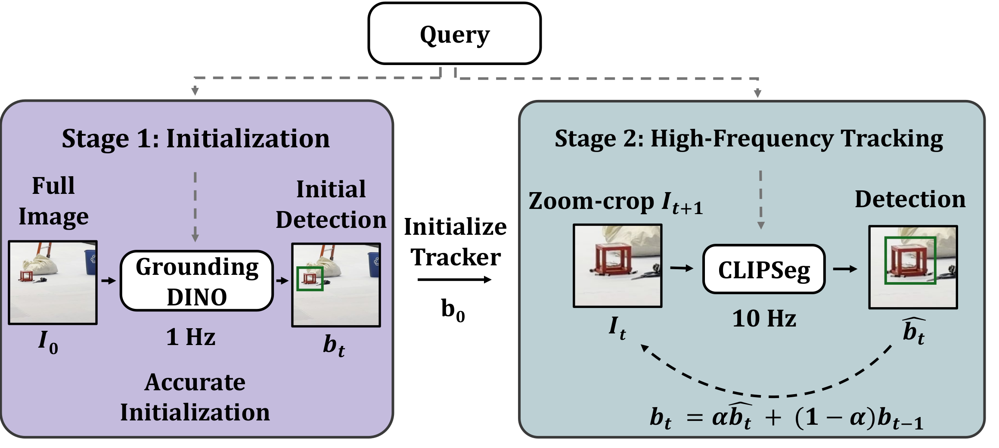
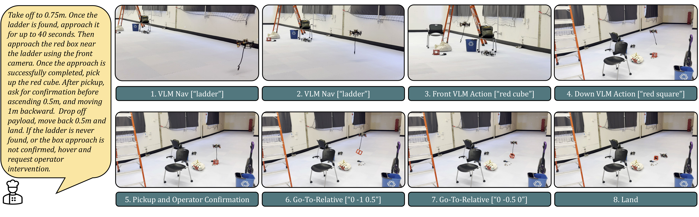
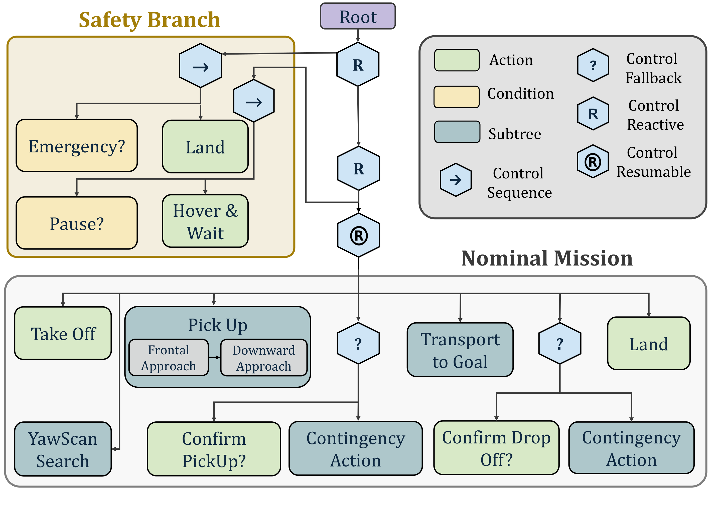

Prompt2Fly
An LLM and Vision-Language Behavior Tree Framework for Autonomous Aerial Transportation
“Pick up the tomato sauce can.”
Behavior Front VLM Action
Aerial robots are versatile platforms for efficient package transportation in safety-critical scenarios, but reliable long-horizon mission execution requires effective collaboration with human supervisors. Enabling shared autonomy for these aerial systems requires natural-language communication, interpretable task decomposition, and explicit mechanisms for human oversight of safety-critical decisions. To address these challenges, we present Prompt2Fly, a hierarchical framework that combines large language models (LLMs) and vision-language models (VLMs) to translate natural-language commands into executable aerial payload-transportation missions using egocentric robot observations. Prompt2Fly employs an LLM to generate reactive behavior trees grounded in validated aerial transportation behaviors, while extracting task-relevant context to condition VLM-based navigation skills. This architecture combines the semantic reasoning and generalization capabilities of pretrained models with the interpretability and modularity of established planning and control algorithms. We demonstrate Prompt2Fly on cable-suspended payload transportation, where the system's underactuated and coupled payload dynamics introduce multiple challenges. We validate the framework through extensive real-world experiments using onboard cameras and a magnetic pickup mechanism. The system identifies and transports payloads in various environments and under different task specifications. To the best of our knowledge, Prompt2Fly is the first system to demonstrate vision-language-based autonomous payload transportation using slung-load aerial robots.

-
01
Language-Guided Behavior Tree Generation for Robot Autonomy
A language-to-behavior-tree framework that uses pretrained LLMs without task-specific fine-tuning to compose aerial transportation behaviors into executable BTs and generate behavior-specific VLM context, supporting real-world deployment.
-
02
VLM-Based Suspended-Payload Transportation Planner
A vision-language-conditioned planner tailored to aerial transportation systems that leverages VLMs to generate robot commands for the autonomous transportation of random objects from onboard camera observations.
-
03
Shared Autonomy Through Human-In-The-Loop Supervision
A collaborative human-in-the-loop architecture built on reactive BTs, allowing an operator to respond to safety-critical behavior transitions.
-
04
Real-World Validation
Extensive real-world experiments, demonstrating end-to-end execution of diverse payload-transportation missions using multiple onboard cameras and a magnetic pickup mechanism. To the best of our knowledge, Prompt2Fly is the first system to demonstrate vision-language-based autonomous transportation tasks with cable-suspended payloads.



